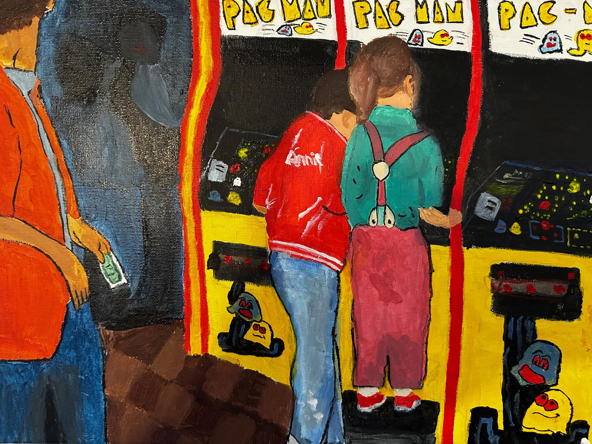
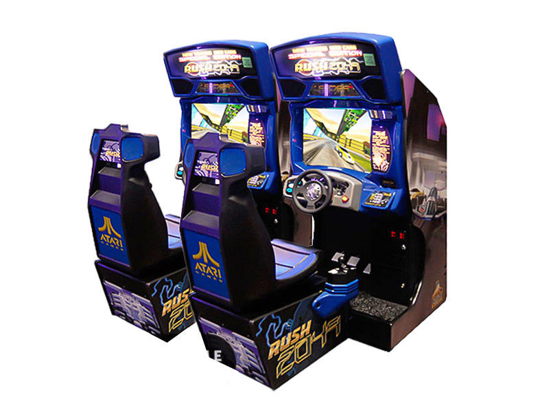
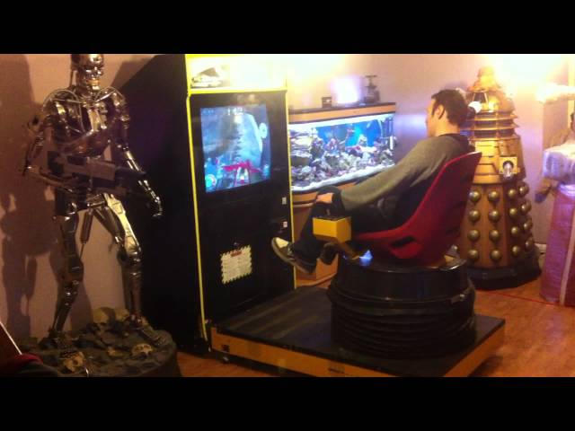
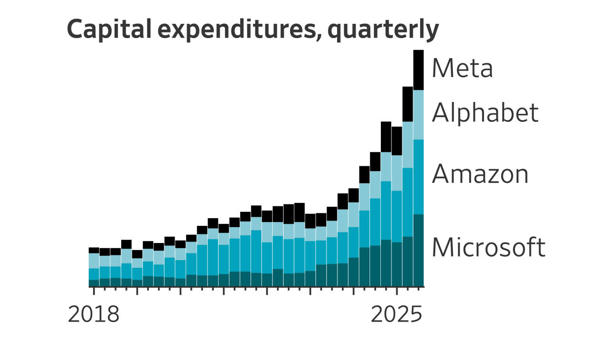
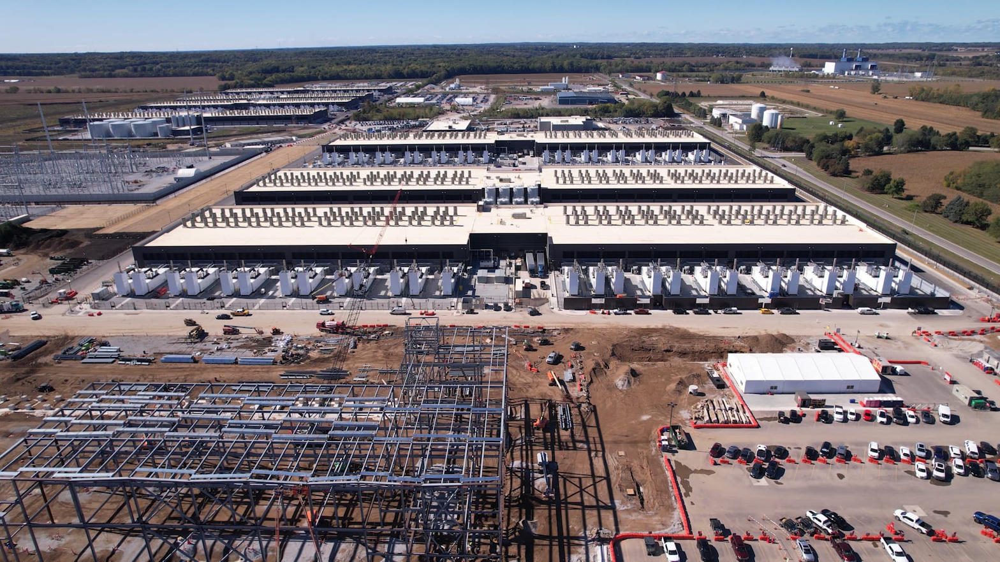

The High-Limit Date
Picture the scene that plays out every Friday night in every major American city. A high-net-worth individual walks into a Dave & Buster’s with a beautiful woman on his arm. He does not come to test reaction time or pattern recognition. He comes to demonstrate surplus. He feeds the machines hundreds of dollars in rapid succession. The lights flash. Tickets or digital credits cascade. She laughs. He wins the oversized prize or the VIP photo. The transaction is complete: capital has purchased the appearance of mastery.
This is not the arcade culture that built the industry. It is its inversion. The high-limit player does not grind. He does not fail, adjust, and return. He simply spends until the machine yields. Pay-to-win, or more precisely pay-to-appear-to-win, becomes the dominant mode. The working-class kid who once stood for hours on a single credit, learning the precise timing of a racing line or the exact window of a jump, is priced out of both the machine and the culture around it.
The Demographic That Needed the Practice

For decades the arcade functioned as a public laboratory for cognitive and motor skills that later transferred to real-world survival. Truck drivers, factory workers, military recruits, and kids from neighborhoods where formal education was uneven all found the same truth: a quarter bought a finite window of pure feedback. You either improved or you paid again. The high-score list was a transparent ranking of human capability, not of disposable income.
San Francisco Rush 2049, released by Atari Games in 1999, remains one of the cleanest expressions of that ethic. The track demanded spatial prediction, throttle control under shifting gravity, and the willingness to crash and restart. High scores were not bought; they were earned through repetition. The verification systems later built around those scores treated skill as the scarce resource. That culture produced a demographic that used entertainment as training.

A Personal Note on the Pay-to-Win Pivot

The person who helped create the modern pay-to-win model in the arcade and motion-platform space once worked at the same corporation I did: Tsunami Visual Technologies. I hired him. At the time I did not fully understand how to economize a pure pay-to-win market. The motion-base platform itself was inherently different from the skill market of San Francisco Rush 2049. One rewarded capital throughput; the other rewarded human improvement. I saw the contrast but did not yet know how to price and protect the skill side against the high-limit side. That knowledge gap had consequences.
Scale: Dave & Buster’s versus Meta

As of early August 2026, Dave & Buster’s Entertainment (PLAY) carries a market capitalization of roughly $0.37–0.40 billion. Its full-year net capital expenditure guidance sits at no more than $200 million, down from approximately $270 million the prior year. That CapEx is being directed toward new stores, remodels, and, after six years of relative neglect, renewed investment in amusements and games.
Meta Platforms, by contrast, is spending on the order of $30 billion in a single recent quarter and has run annual CapEx in the $70 billion range, driven almost entirely by AI infrastructure. Its market capitalization sits near $1.5 trillion. The scale difference is not merely quantitative; it is qualitative. Meta’s spend reshapes the entire computing and talent market. Dave & Buster’s spend is a local allocation decision inside a restaurant-and-entertainment chain.

When the Food Industry Drives Video-Game Capital
In July 2025 Dave & Buster’s installed Tarun Lal as CEO. Lal’s prior career was at Yum! Brands, culminating as president of KFC U.S. He arrived with a “back-to-basics” mandate focused on food and beverage, marketing, and operational discipline. Under that leadership the company began reinvesting in games after a multi-year drought. Food and beverage same-store sales showed sequential improvement; amusement investment was framed as a necessary catch-up.
On August 3–4, 2026, Lal announced his retirement after roughly one year, citing a desire to spend more time with family in India. CFO Darin Harper, with deep finance experience in multi-unit restaurant and entertainment brands, was elevated to CEO. The transition is orderly on paper. The deeper issue is structural: for a critical period the capital allocation decisions that determine which games reach the floor, how they are monetized, and what demographic they serve were made under food-industry metrics and food-industry time horizons.
When the food P&L drives the video-game CapEx, the incentives tilt toward high-throughput, high-ticket, low-skill experiences that convert quickly and photograph well. The long, patient skill grind that once defined the arcade becomes an inefficient use of square footage and of capital. The high-limit player who can drop four figures in an evening becomes the preferred customer. The working-class skill demographic is treated as residual traffic.
The Parallel in the Broader Video-Game Industry
The same distortion is visible at larger scale in the video-game industry itself. Artificial-intelligence investment demands now set the economic temperature. Compute costs, talent competition for machine-learning engineers, and the pressure to integrate generative systems into every title reshape development budgets and release cadences. Small studios that once innovated through pure mechanical inventiveness find the financial incentives erased by the capital intensity required simply to remain competitive in the AI arms race.
Large platform and publisher CapEx does not merely fund better tools; it raises the floor of required spend. Independent innovation that cannot match that floor is either acquired, starved, or forced into the same high-monetization, pay-to-win or battle-pass models that maximize short-term return on the elevated capital base. The skill-based, high-score, pure-mechanic tradition survives mainly in niches or as nostalgia.
Dave & Buster’s is a microcosm of the same logic. When CapEx decisions are subordinated to a parent economic model that does not natively value long-horizon skill formation, the arcade floor drifts toward experiences that extract capital rather than cultivate capability.
Why This Matters for Small Players
The negative aspect of market-cap-scale expenditures is not the spending itself. It is the erasure of financial incentives for the small player who cannot match the scale. When Meta spends tens of billions on AI infrastructure, the surrounding ecosystem of talent, cloud pricing, and investor expectation shifts. When a food-driven operator allocates arcade CapEx according to restaurant metrics, the skill machines that once trained a working-class demographic lose their economic rationale.
Innovation from small players survives only when the cost of entry remains low enough that pure skill or pure invention can still outcompete pure capital. Pay-to-win, high-limit spectacle, and AI-scale CapEx all raise that cost. The result is a quieter, more expensive, less skillful entertainment landscape — one in which the high-net-worth date is impressed and the kid who needed the practice is left without a place to train.
For Dave & Buster’s the mix-up at the top of the organization — food-industry leadership steering video-game capital expenditures — is not an abstract governance issue. It is a concrete risk that the company continues to optimize for the customer who spends the most per visit rather than the customer who improves the most per visit. History suggests the latter is the one who kept the arcades alive for decades. The former is the one who can leave the moment the next shiny alternative appears.
The arcade was never only about fun. It was one of the last widely accessible places where a person with limited capital could still convert time and attention into measurable skill. When that conversion is replaced by a conversion of capital into spectacle, something larger than entertainment is lost.